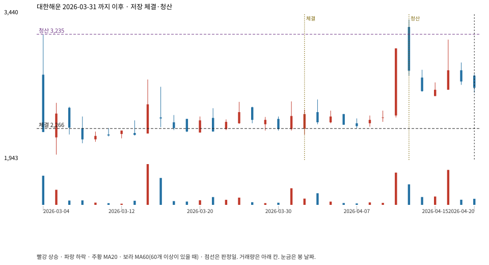

계좌를 다시 돌리지 않았다. 아래는 저장된 주문·체결·청산·비용·손익이다.

{
"case_id": "0a39cc74434f5aff",
"status": "closed",
"trade": {
"symbol": "005880.KS",
"signal_date": "2026-03-31",
"quantity": 4604,
"entry": 2395,
"stop": 2181,
"target": 3235,
"planned_risk": 1011339.5453379974,
"reserved_cash": 11037606.579999998,
"fill": {
"date": "2026-04-01",
"price": 2266.1324999999997,
"fee": 10433.274029999999
},
"exit": {
"date": "2026-04-13",
"price": 3235,
"reason": "target",
"net_pnl": 4435338.755970003,
"ambiguous_bar": false
}
},
"cost": "research fee 10bp each side, slippage 5bp; amounts below are the stored ledger, not a new run",
"chart": "c\/0a39cc74434f5aff.svg"
}